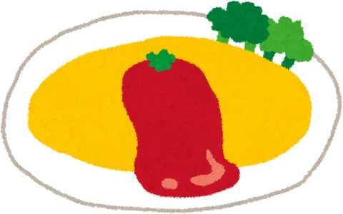
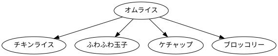
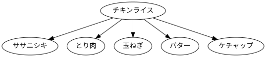
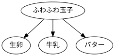
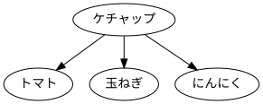
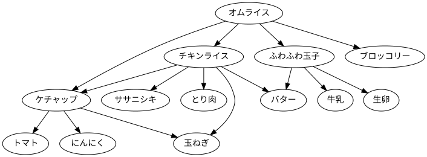

はじめに
美味しいオムライスをつくりましょう。

オムライスのつくりかた
オムライスは、いくつかの部品を組み合わせてつくられます。 それぞれの部品もまた、いくつかの部品を組み合わせてつくられます。
オムライスの部品
オムライスは、次の部品を組み合わせてつくられます。 つまり、オムライスは、次の部品に依存します。
- チキンライス
- ふわふわ玉子
- ケチャップ
- ブロッコリー
オムライスの依存関係を「矢印の根本を作るには、矢印の矢先が必要」というルールで表すと、次に示す有向グラフで表現できます。

チキンライスの部品
チキンライスは、次の部品を組み合わせてつくられます。
- ご飯（ササニシキ）
- とり肉
- 玉ねぎ
- バター
- ケチャップ
チキンライスの依存関係を表すと、次に示す有向グラフで表現できます。

ふわふわ玉子の部品
ふわふわ玉子は、次の部品を組み合わせてつくられます。
- 生卵
- 牛乳
- バター
ふわふわ玉子の依存関係を表すと、次の有向グラフで表現できます。

ケチャップの部品
ケチャップも手づくりしてみましょう。 ケチャップは、次の部品を組み合わせてつくられます。
- トマト
- 玉ねぎ
- にんにく
ケチャップの依存関係を表すと、次の有向グラフで表現できます。

ブロッコリーの部品
ブロッコリーは、ブロッコリー単体で完成した部品です。 つまり、他の部品に依存していません。 スーパーマーケットに赴き、購入するだけで使えるようになります。
その他の部品
とり肉や玉ねぎ、その他の上で説明していない部品もまた、それ単体で完成した部品です。 スーパーマーケットに赴き、購入するだけで使えるようになります。
すべての部品
これまでに説明した部品の依存関係を一つのグラフに表現すると、次のようになります。
